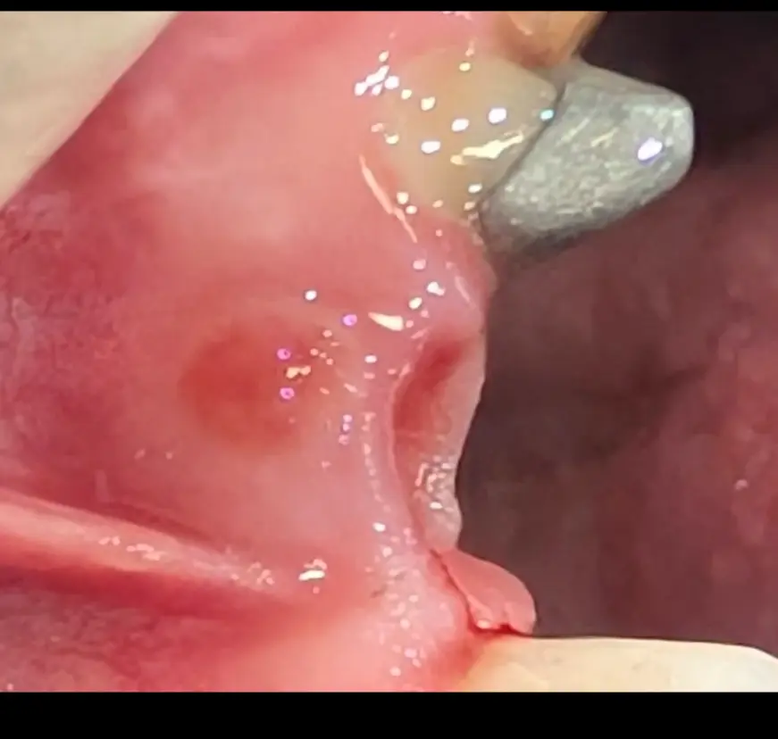
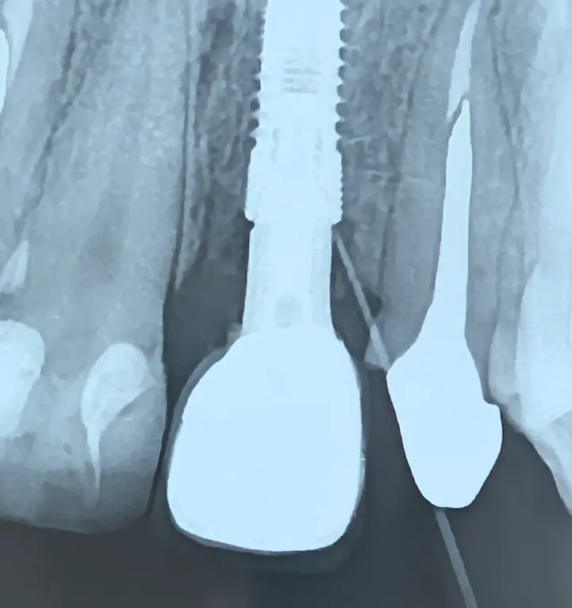
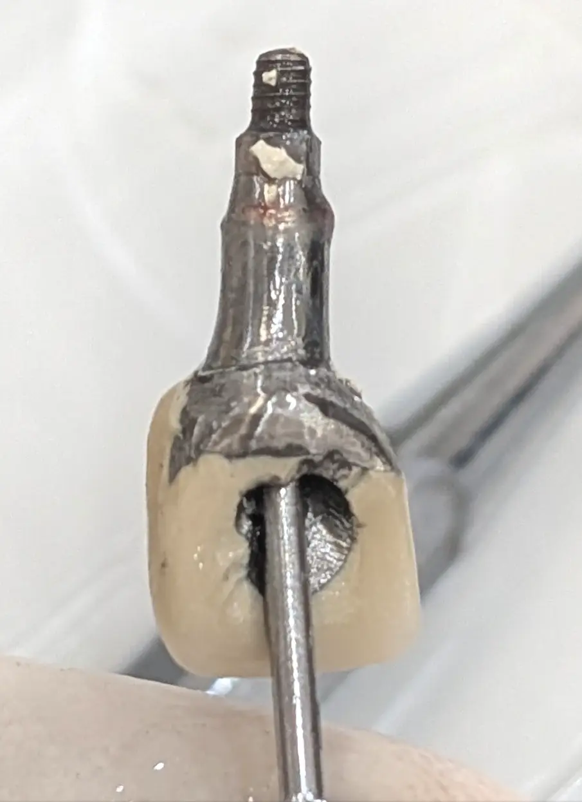

🟦 Insight — آبسهی ایمپلنت در ناحیهٔ زیبایی؛ مقصر پنهان: سمان باقیمانده

۱) داستان بالینی
بیمار جوانی با یک ایمپلنت در دندان یکِ سمت چپ مراجعه کرد؛ قرار بود درمان زیبایی در ناحیهٔ قدامی انجام شود.
روکش ایمپلنت از نظر زیبایی مشکل داشت و تصمیم به تعویض آن هم گرفته شد؛ اما وجود آبسه در ناحیهٔ ایمپلنت مسیر درمان را پیچیده کرد.
جراح اولیه ناحیهی ایمپلنت را باز کرد، ناحیه را تمیز کرد و پودر استخوان قرار داد؛ اما آبسه برگشت.
از دید جراح، درمان قطعی خارجکردن ایمپلنت بود.
ولی هیچ جراحی حاضر نبود در یک بیمار جوان و ناحیهٔ کاملاً زیبایی، ریسک آسیب به تابل باکال را بپذیرد.

در نهایت، با تریس مسیر آبسه مشخص شد که منشأ آبسه کانکشن ایمپلنت است؛ نه استخوان و نه فیکسچر. بنابراین نیازی به خارجسازی ایمپلنت نبود.
۲) نقطهٔ چرخش درمان
سؤال بعدی: چرا کانکشن منشأ آبسه است؟
در جلسهٔ قالبگیری تصمیم گرفته شد ابتدا روکش و اباتمنت تعویض شوند و سپس روند ترمیم بررسی شود.
برای دسترسی به پیچ ایمپلنت، از پشت روکش ورودی ایجاد شد و روکش خارج شد.

۳) نکتهٔ کلیدی که همهچیز را روشن کرد
پس از خارجکردن روکش مشخص شد:
سمان باقیمانده در داخل کانکشن، عامل التهاب مزمن و آبسه بوده است.
نکات کلیدی:
- آبسه را تریس کنید.
- خطر سمان باقیمانده را جدی بگیرید.
۴) جمعبندی درمان
کل ناحیهٔ کانکشن کاملاً تمیز شد.
اباتمنت و روکش قبلی شستشو و ضدعفونی شدند.
همان روکش قبلی بهعنوان روکش موقت دوباره در محل قرار گرفت.
با حذف منبع اولیهٔ التهاب، آبسه بدون نیاز به جراحی برطرف خواهد شد.